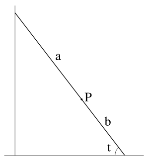
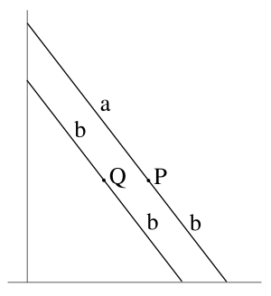
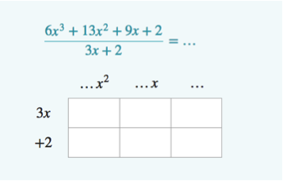
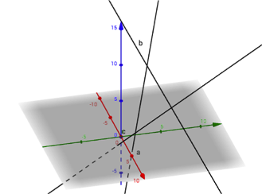
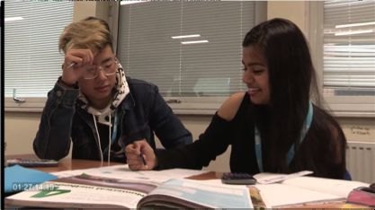
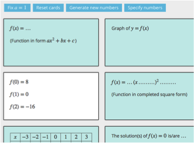

|
Written by Martin Hyland, co-director of Underground Mathematics
In the January newsletter I discussed the locus of a point on a ladder sliding down a wall. For the midpoint, simple geometry shows the locus is (a quarter of) a circle. For a general point the diagram shows the point P with coordinates (a cos t, b sin t) and in place of the circle we get the ellipse x2/a2 + y2/b2 = 1. Last time I stopped there with the suggestion that maybe we were still missing something.
It is essential to the philosophy of Underground Mathematics that we learn both by solving problems and by forging connections. The latter is what I like to call – extending Daniel Kahneman – VERY SLOW THINKING. What more can we learn from the problem of the ladder? Here is a possibility. Perhaps we know a lot about ellipses but it will be enough to focus on the idea that an ellipse is an elongated or squashed circle. That may seem crude but it tells us – without calculus – that the area inside x2/a2 + y2/b2 = 1 is πab.
Now ask whether we can relate the locus of P above to a circle? Look at the diagram. It shows two parallel ladders, our original one and – as drawn – a shorter ladder of length 2b and mid-point Q. As the ladders slide down the wall together, Q lies on the circle x2 + y2 = b2. But P is obtained from Q by expanding by a/b in the x-direction. Hence P lies on x2/a2 + y2/b2 = 1.
I hope that readers will appreciate that something important happens in that kind of thinking. But what is it? It is not just that we have found a direct explanation independent of Trigonometric functions and Pythagoras; though we have done that. Nor is it simply a matter of using our Pervasive Ideas (here Transforming and Invariance); though that is significant. Rather, at an intangible level we have more mathematical understanding. Think of all these parallel ladders sliding down together.
I close this time where I started in January with the Pisa Tests. Can what we are considering here, the consequences of VERY SLOW THINKING, be tested? I rather think not. Now suppose that you have a choice between increasing Pisa scores and improving mathematical understanding. Which do you choose?
|
|
We take a closer look at our Facebook group UMchat.
We want to support teachers in their use of Underground Mathematics. While there are many elements of the website – teacher notes, solutions, recorded webinars etc. – that offer support for using our resources, we also recognise the importance of community. Having a place to share ideas or ask questions of those who work in a similar way can be invaluable, and so we encourage you to join UMchat.
UMchat is a closed Facebook group, which means only the members of the group can see what you post, and we will keep the conversation based around mathematics and mathematics teaching. Some of the Underground Mathematics team are part of the group and will always be happy to answer questions, but several of our Champions, who teach around the country, regularly share their ideas and suggestions when they use our resources and are ready to provide support and advice to anyone who wants it.
|
|
Our third webinar, ‘Asking questions in the classroom’ ran on 1st March. The 40 minute recording is available to view on the website alongside our previous webinars, ‘Using student work as a resource’ and ‘Developing a mathematical classroom’.
|
|
New and updated resources
|
|
|
A selection of resources that are new to the site are shown below. To see all the resources published in the last month click here.
Divide it up
This resource is designed to help students to make links between multiplication and division of polynomials using multiplication grids. It introduces a method of algebraic division that can easily be extended to more complex divisors.
Three lines
This resource uses vector equations of lines in three dimensions. Students will practise finding intersections of lines and using Pythagoras’ Theorem, and will start to appreciate how these processes are different in 3D from in 2D.
Inverse integrals: Resources in action
This Resource in action contains video clips of Inverse integrals being used in the classroom, reflection from the teacher, and sample student work from the lesson. The clips can help you prepare to use the resource, and also prompt reflection on classroom practice.
Pick a card…
This resource offers multiple perspectives on quadratic functions of the form y = ax2 + bx + c and their graphs. The cards contain different properties and information about a quadratic. Reveal one card and ask students to fill in the rest. It could be used to introduce some aspects of quadratics, as a fluency exercise or as revision.
|
|
Creativity in mathematics
|
|
|
Do you encourage creativity in your students? Rachel West from Cambridge International Examinations is looking for your help.
What does creativity in maths mean to you? Al Cuoco et al. talk about developing good “habits of mind” which will help them to become successful mathematicians. Many of these habits – experimenting, pattern sniffing, inventing, visualising and tinkering are involved in creativity in any subject. I’m looking for maths teachers who are helping their students develop these skills and I would love to talk to you about how you are doing this in your classroom. As part of my role at Cambridge International Examinations (part of Cambridge Assessment) I’m helping to develop resources for teachers of all subjects worldwide who want to prepare their learners for the uncertain future of the 21st Century.
Rachel West works for CIE and can be contacted via email at: west.r@cie.org.uk.
|
|
The Underground Mathematics site is accessible to all, and its design is rooted in teacher experience. So we would value any contribution you can make by sharing your experiences of using our resources with your students. You can join the conversation by creating a login for the site and using the ‘Discuss’ link that appears at the top of each page.
Our Twitter feed is @UndergroundMath, where we regularly tweet resource suggestions, events we are involved in and any interesting maths we come across. You can also join UMChat, a Facebook group for teachers to share experiences and ideas for using Underground Mathematics in the classroom.
|
|
Over the next few months you can find the team and the Underground Mathematics Champions at the following events.
Cambridge Science festival, Centre for Mathematical Sciences, Cambridge, 25th March
Mathematical Association conference, Royal Holloway, 7th – 9th April
ATM conference, Stratford, 10th – 13th April
LMS Girls in mathematics day, Centre for Mathematical Sciences, Cambridge, 24th April
|
Centre for Mathematical Sciences
University of Cambridge
Wilberforce Road
Cambridge
CB3 0WB
01223 766857
info@undergroundmathematics.org
https://undergroundmathematics.org
Underground Mathematics is funded by a grant from the UK Department for Education and based at the University of Cambridge.
|